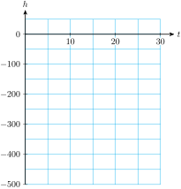
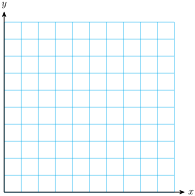

The coordinates of the intercepts are easy to find.
Intercepts of a Graph.
To find the \(x\)-intercept, we set \(y = 0\) and solve for \(x\text{.}\)
To find the \(y\)-intercept, we set \(x = 0\) and solve for \(y\text{.}\)
Example1.3.3.
In Example 1.1.11 of Section 1.1, we graphed an equation, \(g=20-\frac{1}{12}d \text{,}\) for the amount of gasoline, \(g\text{,}\) left in Leon’s tank after he has driven for \(d\) miles. Find the intercepts of the graph.
The \(d\)-intercept tells us that when \(d = 240\text{,}\)\(g = 0\text{,}\) or that when Leon has traveled 240 miles, he has 0 gallons of gasoline left; the fuel tank is empty.
The \(g\)-intercept tells us that when \(d = 0\text{,}\)\(g = 20\text{,}\) or that when Leon has traveled 0 miles, he has 20 gallons of gasoline left. The fuel tank holds 20 gallons when full.
Some linear models are easier to use when they are written in the general form.
Example1.3.9.
The manager at Albert’s Appliances has $3000 to spend on advertising for the next fiscal quarter. A 30-second spot on television costs $150 per broadcast, and a 30-second radio ad costs $50.
The manager decides to buy \(x\) television ads and \(y\) radio ads. Write an equation relating \(x\) and \(y\text{.}\)
Make a table of values showing several choices for \(x\) and \(y\text{.}\)
Plot the points from your table, and graph the equation.
Each television ad costs $150, so \(x\) ads will cost $\(150x\text{.}\) Similarly, \(y\) radio ads will cost $\(50y\text{.}\) The manager has $3000 to spend, so the sum of the costs must be $3000. Thus,
\begin{gather*}
150x+50y=3000
\end{gather*}
We choose some values of \(x\text{,}\) and solve the equation for the corresponding value of \(y\text{.}\) For example, if \(x=\alert{10}\) then
The manager at Breadbasket Bakery has $120 to spend on advertising. An ad in the local newspaper costs $15, and posters cost $4 each. She decides to buy \(x\) ads and \(y\) posters. Write an equation relating \(x\) and \(y\text{.}\)
Hint: Use the general form for a linear equation. What is the total amount of money the manager will spend?
The owner of a movie theater needs to bring in $1000 revenue at each screening in order to stay in business. He sells adults’ tickets for $5 each and children’s tickets at $2 each.
How much revenue does he earn from selling \(x\) adults’ tickets?
How much revenue does he earn from selling \(y\) children’s tickets?
Write an equation in \(x\) and \(y\) for the number of tickets he must sell at each screening
2.
Karel needs 45 milliliters of a 40% solution of carbolic acid. He plans to mix some 20% solution with some 50% solution.
How much carbolic acid is in \(x\) milliliters of the 20% solution?
How much carbolic acid is in \(y\) milliliters of the 50% solution?
How much carbolic acid is in the solution Karel needs?
Write an equation in \(x\) and \(y\) for the amount of each solution Karel should mix.
Exercise Group.
For Problems 3 and 4, solve the equation for \(y\) in terms of \(x\text{.}\)
3.
\(3x+5y=16 \)
4.
\(20x=30y-45,000\)
Skills Practice
Exercise Group.
For Problems 5-8,
Find the intercepts of the graph.
Graph the equation by the intercept method.
5.
\(9x-12y=36\)
6.
\(\dfrac{x}{9}-\dfrac{y}{4}=1 \)
7.
\(4y=20 + 2.5x\)
8.
\(30x=45y+60,000\)
9.
Find the intercepts of the graph for each equation.
Find the \(y\)-intercept of the line \(y = mx + b\text{.}\)
Find the \(x\)-intercept of the line \(y = mx + b\text{.}\)
12.
Find the \(y\)-intercept of the line \(Ax + By = C\text{.}\)
Find the \(x\)-intercept of the line \(Ax + By = C\text{.}\)
Exercise Group.
For Problems 13-16, write an equation in general form for the line.
13.
14.
15.
16.
Exercise Group.
For Problems 17-20, write the equation in two standard forms:
the general linear form, \(Ax+By=C\text{,}\) with integer coefficients, and
the form for a linear model, \(y = (\text{starting value}) + (\text{rate}) \times x\)
17.
\(\dfrac{2x}{3}+\dfrac{3y}{11}=1\)
18.
\(\dfrac{8x}{7}+\dfrac{2y}{7}=1\)
19.
\(0.4x=4.8-1.2y\)
20.
\(-0.8y=12.8-3.2x\)
Applications
21.
Delbert must increase his daily potassium intake by 1800 mg. He decides to eat a combination of figs and bananas. One gram of fig contains 9 mg of potassium, and one gram of banana contains 4 mg of potassium.
How many mg of potassium are in \(x\) grams of figs?
How many mg of potassium are in \(y\) grams of bananas?
Write an equation for the number of grams of fig, \(x\text{,}\) and the number of grams of banana, \(y\text{,}\) that Delbert needs to eat daily.
Find the intercepts of the graph. What do the intercepts tell us about Delbert’s diet?
22.
Five pounds of body fat is equivalent to approximately 16,000 calories. Carol can burn 600 calories per hour bicycling and 400 calories per hour swimming.
How many calories will Carol burn in \(x\) hours of cycling?
How many calories will she burn in \(y\) hours of swimming?
Write an equation that relates the number of hours, \(x\text{,}\) of cycling and \(y\text{,}\) of swimming Carol needs to perform in order to lose 5 pounds.
Find the intercepts of the graph. What do the intercepts tell us about Carol’s exercise program?
23.
A deep-sea diver is taking some readings at a depth of 400 feet. He begins rising at a rate of 20 feet per minute.
Complete the table of values for the diver’s altitude \(h\) after \(t\) minutes. (A depth of \(400\) feet is the same as an altitude of \(-400\) feet.)
\(t\)
\(\quad ~ 0 ~ \quad\)
\(\quad 5 \quad\)
\(\quad 10 \quad\)
\(\quad 15 \quad\)
\(\quad 20 \quad\)
\(h\)
Write an equation for the diver’s altitude, \(h\text{,}\) in terms of the number of minutes, \(t\text{,}\) elapsed.
Find the intercepts and sketch the graph.
\(\quad t \quad\)
\(\quad h \quad\)
\(0\)
\(\)
\(\)
\(0\)

Explain what each intercept tells us about this problem.
24.
In central Nebraska, each acre of corn requires 25 acre-inches of water per year, and each acre of winter wheat requires 18 acre-inches of water. (An acre-inch is the amount of water needed to cover one acre of land to a depth of one inch.) A farmer can count on 9000 acre-inches of water for the coming year. (Source: Institute of Agriculture and Natural Resources, University of Nebraska)
Write an equation relating the number of acres of corn, \(x\text{,}\) and the number of acres of wheat, \(y\text{,}\) that the farmer can plant.
Complete the table.
\(~ x ~\)
\(~ 50 ~ \)
\(100\)
\(150\)
\(200\)
\(~ y ~\)
Find the intercepts of the graph.
\(\quad x \quad\)
\(\quad y \quad\)
\(0\)
\(\)
\(\)
\(0\)

Use the intercepts to help you choose appropriate scales for the axes, and graph the equation.
What do the intercepts tell us about the problem?
What does the point \((288, 100)\) mean in this context?
25.
The owner of a gas station has $19,200 to spend on unleaded gas this month. Regular unleaded costs him $2.40 per gallon, and premium unleaded costs $3.20 per gallon.
How much do \(x\) gallons of regular cost? How much do \(y\) gallons of premium cost?
Write an equation in general form that relates the amount of regular unleaded gasoline, \(x\text{,}\) the owner can buy and the amount of premium unleaded, \(y\text{.}\)
Find the intercepts and sketch the graph.
What do the intercepts tell us about the amount of gasoline the owner can purchase?
26.
Leslie plans to invest some money in two CD accounts. The first account pays 3.6% interest per year, and the second account pays 2.8% interest per year. Leslie would like to earn $500 per year on her investment.
If Leslie invests \(x\) dollars in the first account, how much interest will she earn? How much interest will she earn if she invests \(y\) dollars in the second account?
Write an equation in general form that relates \(x\) and \(y\) if Leslie earns $500 interest.
Find the intercepts and sketch the graph.
What do the intercepts tell us about Leslie’s investments?